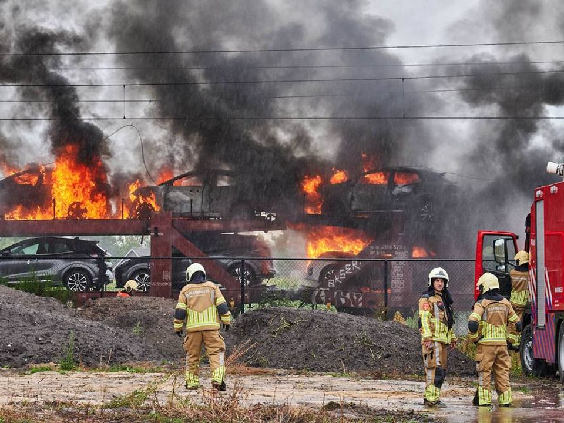

-

Brand in autotrein bij Etten-Leur veroorzaakt door foute spoedreparatie
-

Een op de zes mensen die gezonder willen eten, kan dat niet betalen
-
Elektronicaketen BCC vraagt uitstel van betaling aan
-
Hoogste eer voor Jan Zwartendijk, die duizenden Joden redde